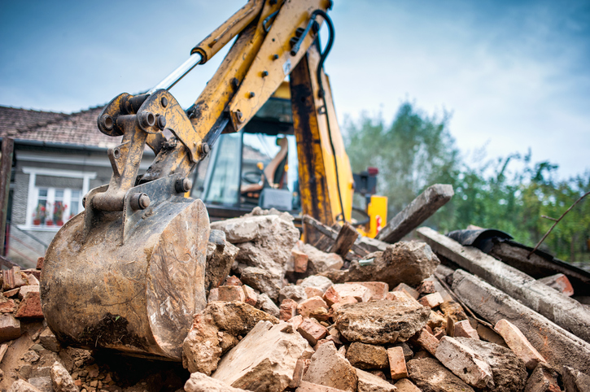

For the safety of everyone, it is important to have the electricity service disconnected before you begin demolition or removal of a building.
For the safety of everyone, it is important to have the electricity service disconnected before you begin demolition or removal of a building.

How do I book a Permanent Disconnection?
Contact your Energy Retailer, giving them the address or ICP number of the building and request a permanent disconnection. It is important to organise this early so arrangements can be made well before demolition day.
Your electricity retailer will arrange a Service Request for the disconnection to be carried out.
Contact IEIO and we will remove the meter and arrange to have the lines removed from the connection point on the building.